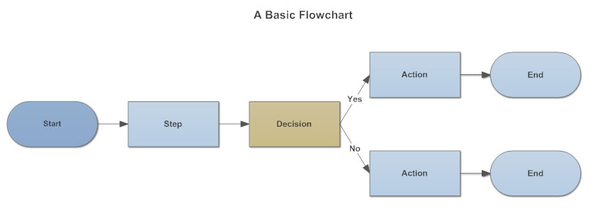

语音识别： 将声音转化成文字的技术
语音识别，也被称为自动语音识别(Automatic Speech Recognition, ASR)或语音转文本识别(Speech To Text, STT)，其目标是让计算机自动将人类的语音内容转换为相应的文字。
应用场景
-

语音输入
君子动口不动手：解放双手，动动嘴就能输入文字
-
语音搜索
快人一步：语音说出你想要的内容，搜索结果快速呈现
-
语音对话
无缝交互：与机器设备语音交互，自然、便捷、人性化
-
音频内容转写文字
自动速记员：海量录音自动转成文字，便于检索与管理
语音输入APP下载
语音输入Android版APP
扫码直接下载
语音识别在线体验
点击话筒按钮后，请对准话筒开始说话，在安静环境下测试。
LOG注意事项：
- 目前仅支持HTML5浏览器（Chrome或Firefox），如不能正常使用，请更新浏览器至最新版本。
- 如浏览器弹出是否“使用您的麦克风”，请选择允许。
- 如识别有问题，请首先检查麦克风设置，如音量大小。
- 识别完毕，请再次点击话筒按钮退出识别服务，以释放识别资源供其他用户使用。
- 有时由于网络速度问题和服务器资源抢占问题，识别速度缓慢。
- 目前仅支持校园网使用，如需要在校外体验，请使用西工大VPN登陆。
开发者文档
权限说明
| 变量名 | 含义 |
|---|---|
| WRITE_EXTERNAL_STORAGE | 往文件内写入数据的权限 |
| MOUNT_UNMOUNT_FILESYSTEMS | 创建文件权限 |
| RECORD_AUDIO | 录音权限 |
| INTERNET | 互联网权限 |
| ACCESS_NETWORK_STATE | 获取网络状态权限 |
| ACCESS_WIFI_STATE | 获取无线网络状态权限 |
临时文件
public void NOTempFile()
说明：设置不存储临时音频文件。
参数：无
返回值
- 0 - 创建成功
- 1 - 创建失败
public int CreatTempFile()
说明：设置存储临时文件在默认路径下。
默认路径：SD卡下sound_temp文件夹下，无SD卡系统内存sound_temp下。
参数：无
返回值
- 0 - 创建成功
- 1 - 创建失败
public int CreatTempFile(String filepath,String filename)
说明：自定义存储路径。
参数格式如下：
| 参数名 | 类型 | 说明 |
|---|---|---|
| filepath | String | 存储文件路径 |
| filename | String | 存储文件名 |
返回值
- 0 - 创建成功
- 1 - 创建失败
连接网络
public int connect(int connectTimeout)
说明：连接网络。
参数格式如下：
| 参数名 | 类型 | 说明 |
|---|---|---|
| connectTimeout | int | connectTimeout指定毫秒内没有连接成功，则断定网络不可用 |
返回值
- 0 - 创建成功
- 1 - 创建失败
发送音频
public void send()
说明：发送音频到服务器。
参数：无
返回值：无
接收结果
public void receive()
说明：接收识别结果。
参数：无
返回值：语音识别结果。
public String getmessage()
说明：获取识别结果。
参数：无
返回值：服务器返回结果，包含识别状态和识别结果。
关闭连接
public void close()
说明：关闭连接。
参数：无
返回值：无